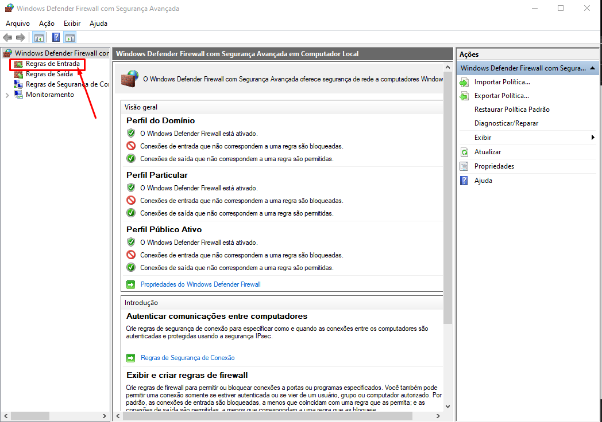
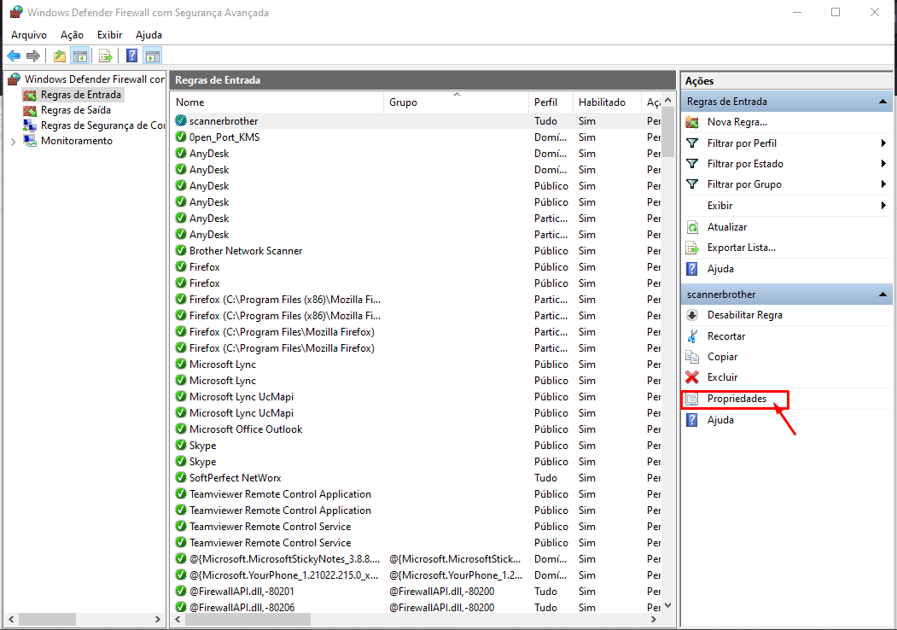

Seja bem vindo ao TI
Manual - Scanner
-
1ºPasso: Configuração do scanner Brother.
Para que não tenha problema de comunicação entre o scanner da impressora Brother e a máquina, temos que fazer uma configuração no Firewall para liberação de portas UDP. Entre no “Painel de Controle”. Clique em “Windows Defender Firewall”
- 2º Passo: Acessando o Firewall... Após clique em “Configurações Avançadas”
- 3ºPasso: Criando a regra Quando abrir a tela do Firewall, vá em “Regras de Entrada”.

- Clique em “Nova Regra"
- Com a janela aberta, vamos criar a Regra. Aqui selecionamos o tipo da Regra. Selecione a opção “Porta”.
- A regra vai ser para portas “UDP”. E as “Portas locais especificas” que vão ser liberadas serão: 37, 137, 161, 54925, 54926. Somente essas.
- Agora, vamos “Permitir a conexão”.
- Quando a regra se aplica? Vamos selecionar em todos os casos.
- Coloque o nome da Regra. Por padrão “ScannerBrother”. E não precisa da descrição. Feito, clique em concluir.
- 4ºPasso: Liberando Borda. Clique em “Propriedades”.

- Depois vá na aba “Avançado".
- Agora em selecione “Permitir percurso de borda”.
-
E está feito. Agora já temos a regra criada, e comunicação com scanner.
Vamos verificar se está certo.
5º Passo:Verificando comunicação. No menu iniciar, procure o “Brother Utilities”.
- Agora clique em “Scanners e Câmeras”.
- Agora que está visualizando as scanner instaladas, selecione a correta e clique em “Propriedades”.
- Nas propriedades, vá na aba “Botão Escanar para” e no campo aberto digite o nome que você quer que apareça na Impressora, pode ser nome da pessoa ou nome da máquina.
- Feito isso, vá para a aba “Geral” e clique em “Testar Scanner”.
- Caso esteja tudo certo, apresentará a seguinte mensagem:
- É assim que resolvemos problema de comunicação e fazemos a configuração da scanner.